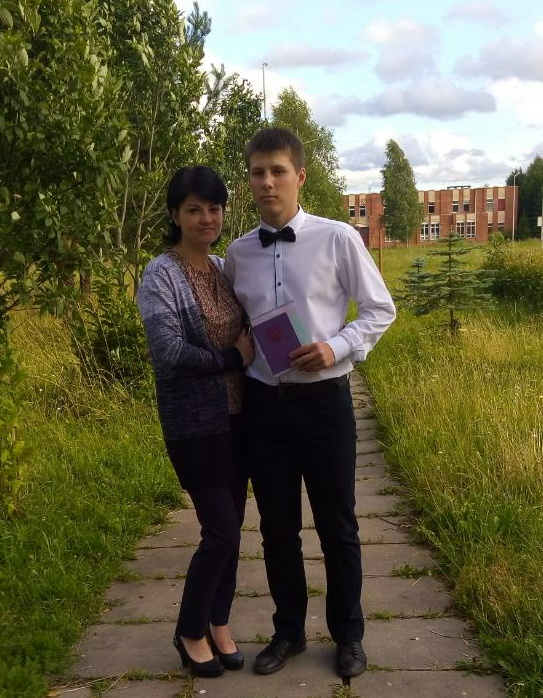

ОБО МНЕ
Меня зовут - Данила. Мне 16 лет. Я родился в г.Ельня. Мне нравиться заниматься спортом, но больше всего футболом. Также люблю побеседовать с друзьями на разные темы, сходить погулять в хорошую солнечную погоду. Иногда играю в компьютерные игры или занимаюсь своими делами на компьютере.
После 9 класса поступил в Cмолекский колледж Телекоммуникаций. Учусь на первом курсе, на программиста в компьютерных сетях.
